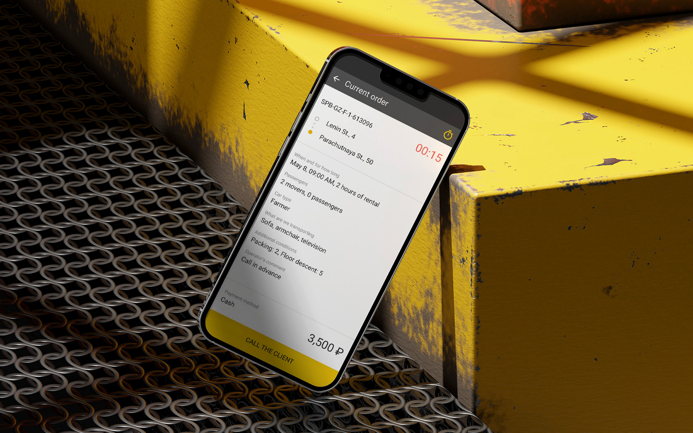
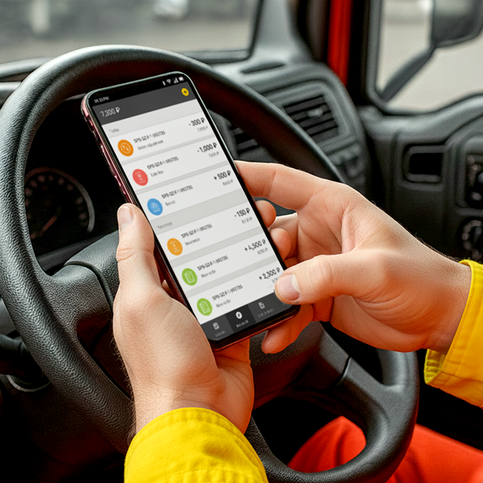
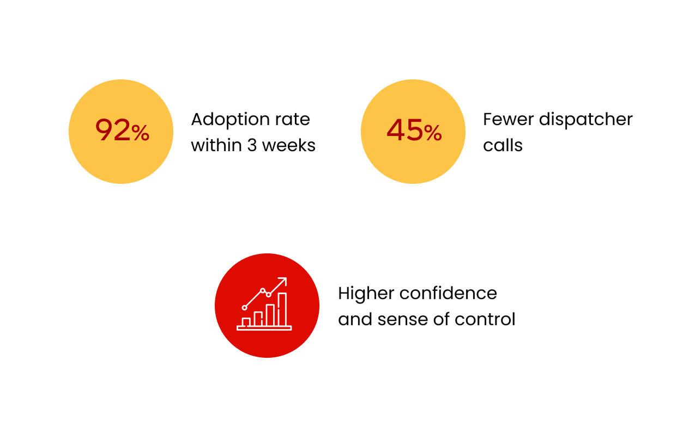
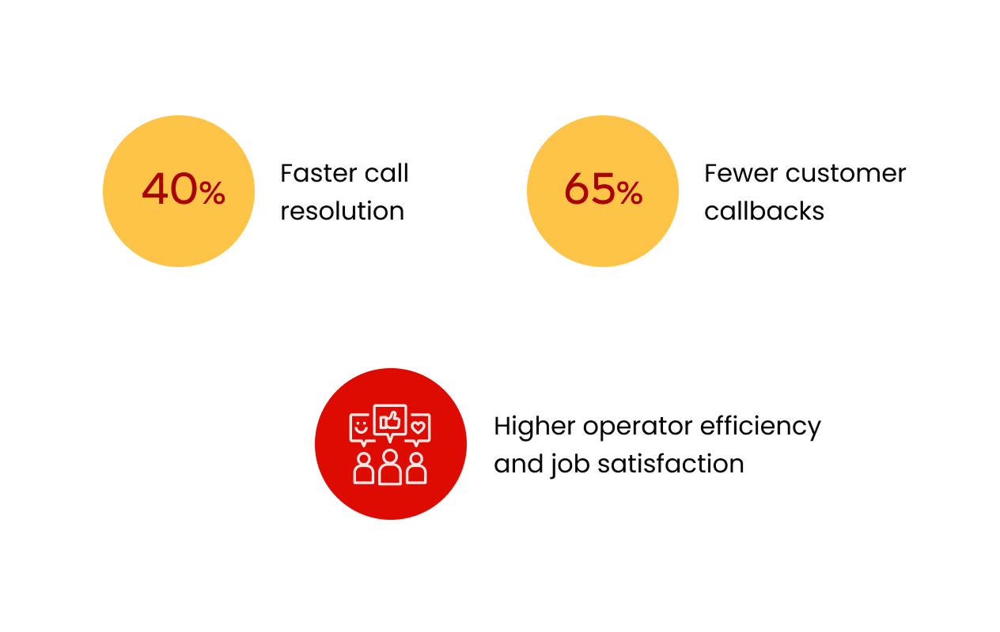
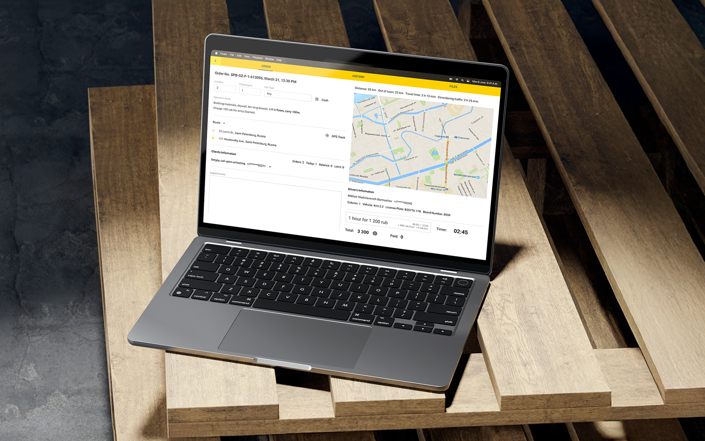

Turning a fragmented logistics network into a single, intelligent ecosystem.

I designed a connected service ecosystem for a transportation company — connecting 700 vehicles, 150 operators, and customers with tools that finally worked together.
Ending the era of “Let me call the driver” and “Where’s that spreadsheet?”

Overview
Gazelkin is one of the largest urban cargo transportation companies in Russia, handling thousands of deliveries every day. But while its operations scaled rapidly, its digital infrastructure didn’t. There was no single system to connect drivers, dispatchers, call centers, and customers, each relied on separate, outdated processes.
Overview
To support this growing network, I led a full UX transformation. I built an end-to-end digital ecosystem that connected every role in real time and replaced scattered tools with a single source of truth. From dispatch to delivery, information started to flow automatically — reducing coordination time, errors, and daily chaos.
I created a connected ecosystem for Gazelkin’s drivers, dispatchers, call center, and customers, powering thousands of daily deliveries with real-time visibility and seamless coordination.
The Challenge
The reality on the ground was messy. Orders lived in chats, calls, and operator memory, with no shared system or structured data. There were no user flows, no design system, and no UI foundations — everything had to be built from zero.
At the same time, the people using these tools were low-tech and under constant pressure. Drivers had zero app experience. Operators juggled calls, notes, and mental math all day. New tools couldn’t add confusion; they had to feel intuitive and trustworthy from day one.
A fragmented system with no shared data, no design foundation, and users under constant pressure, this was the real challenge.
My Part in This
I worked across every part of the system: from the driver app to the customer site. To understand what really needed fixing, I spent time with drivers, operators, and dispatchers, watching how they worked and where things broke down.
It wasn’t just about making screens look better, it was about creating tools people actually wanted to use, even if they didn’t trust tech to begin with.
I mapped workflows on-site with drivers, operators, and dispatchers to see how information really moved through calls, chats, and spreadsheets.
I shaped IA, flows, and UI across driver tools, operator dashboards, and customer touchpoints so roles stayed aligned in real time.
I tested early builds with frontline teams and iterated until flows felt obvious under pressure, not just in the office.
I partnered with PMs and engineers to ship incrementally, prioritize blockers, and keep business stakeholders aligned with what we learned in the field.

Research & Discovery
To design tools that worked in real operational chaos, I had to understand how Gazelkin’s logistics actually functioned day to day. I started by mapping existing workflows, sitting with drivers, operators, and dispatchers, and observing how information moved through chats, calls, and mental shortcuts.
Alongside on-site observations, I conducted stakeholder interviews, desk research, and process audits to understand the company’s scaling challenges. By combining what people said with what they actually did, I identified critical pain points, defined key user groups, and set the direction for a whole system.
I rode along on routes and sat next to operators to capture how exceptions were handled when systems failed.
I turned informal habits into explicit journey maps so gaps between tools and reality were visible to the whole team.
I ran structured interviews with dispatch, support, and leadership to connect business KPIs with frontline friction.
Quick note before we start…
This case study covers the driver app and call center interface, but represents just part of a larger transformation. In parallel, I also led the redesign of the customer-facing website and mobile app, making it easier for people to book services, track deliveries, and get help without calling support.
I also collaborated with developers on refining the internal logistics tool, improving task visibility, fixing major UX blockers, and helping dispatchers work with less chaos. I’m still organizing those flows, decisions, and results, and will be updating this case study soon with the full story.
Understanding the Users
The real insights didn’t come from surveys, they came from sitting in the call center at rush hour and riding along with drivers. I watched operators manage a city’s worth of deliveries through chat groups and memory. I saw drivers scribbling notes, calling in for updates, hoping nothing changed mid-route.
These weren’t abstract “user groups”, they were people holding a complex system together through sheer effort. What I saw in the field shaped every decision. My job was to turn that invisible work into clear, reliable tools, so every feature solved a real problem I’d seen myself.
Information gaps and low digital literacy made every delivery a guessing game. Drivers relied on calls, notes, and memory to navigate their day — missing updates, making errors, and working without visibility into what came next.
Documented real routes, interruptions, and hand-offs between dispatch and drivers.
Captured how exceptions were communicated when systems disagreed with reality.
Critical route changes often arrived late or through informal channels.
Drivers balanced paper lists, phone calls, and app notifications simultaneously.
Every delivery passed through their heads. Operators were bombarded with calls and messages, constantly interrupted, and forced to keep the entire operation in their memory, without any shared system to lean on.
Tracked multitasking patterns across ticketing, telephony, and spreadsheets.
Mapped escalation paths with supervisors to align UI states with SLA reality.
Operators memorized exceptions that never made it into official tools.
Multiple monitors still required mental joins between systems.
“I do six or seven jobs a day. If I miss something, it’s my fault, even if no one told me about the change. The customer doesn’t care where the mistake happened, they blame me.”

Designing for the Road, Not the Office
Designing for the Road, Not the Office
The driver interface wasn’t designed in a vacuum, it was shaped by real routes, real constraints, and the daily rhythm of delivery work. Each feature had a clear purpose: reduce confusion, save time, and build trust. The focus was on practical solutions that fit into how drivers actually worked, not how we wished they did.
Each decision addressed a specific pain point, from missed updates to unclear job details and constant back-and-forth with dispatch. Together, these changes turned a messy process into a structured, reliable tool.
Structured job cards so drivers always saw status, pickup, and delivery in one glance.
Reduced dependency on perfect connectivity for critical steps.
Microcopy reflected how dispatchers actually spoke on the radio.


Even though the driver app solved the core problems, I often think about what I’d improve if I were designing it today.
With more time and resources, there are features that could make the experience even clearer, safer, and more motivating for drivers.
Smarter reminders before risk moments (traffic, late pickup windows).
Even richer breakdowns per job to reinforce trust.
Drivers adopted the app immediately, without training, and quickly embraced it as something that made their days easier.
Optimizing the Operator Experience
Optimizing the Operator Experience
Operators were the ones holding everything together. They worked through calls, chats, and sheer memory to keep deliveries moving, making quick decisions without the tools to support them. It was fast, messy, and exhausting — but they made it work.
My goal was to take that invisible, improvised process and turn it into a clear, structured flow. Instead of juggling a dozen tabs and phone calls, operators now had one place that guided their actions, reduced mental load, and gave them confidence.
Unified statuses so everyone referenced the same delivery state.
Surfaced severity so operators could triage without re-reading threads.
I’m proud of how much the tools improved operators’ daily work, giving structure to what used to be improvised under pressure.
But with distance, I can see new opportunities to push the experience even further.
Highlighting risk before it hits the call queue.
Lightweight history of who changed what for faster handoffs.
Operators could finally focus on resolving real issues rather than relaying information.

Results for Drivers: Less Chaos, More Delivery
Results for Drivers: Less Chaos, More Delivery
As soon as the app made it into drivers’ hands, it began to resolve real pain points, and the impact was evident on day one. Drivers no longer had to rely on constant calls or vague instructions: essential info and updates became available at their fingertips.
Because drivers got clearer workflows, transparent earnings, and better feedback loops, miscommunications dropped, productivity rose, and trust in the system increased. Over just a few weeks, the data showed that the new solution wasn’t just nice to have — it made their work measurably easier and more reliable.
Self-serve status cut repetitive check-ins with dispatch.
Drivers finished more jobs per shift with fewer returns.

“Feels good not having to stop and call someone for every little thing.”
Results for Operators: Calm in the Control Room
Results for Operators: Calm in the Control Room
Before the redesign, operators were buried under repetitive calls, manual order tracking, and constant stress from unpredictable schedules. Every day felt like firefighting — answering the same questions, updating spreadsheets, and managing chaos instead of operations.
With the new dashboard, daily workflows became structured and transparent. Real-time driver statuses, instant alerts, and automated route updates turned routine control into proactive management.
Everyone referenced the same live map of exceptions.
Fewer hops between spreadsheets and telephony.

“We used to get so many complaints because the prices didn’t match or orders got mixed up. Now everything’s clear, and the calls go smoother.”
Business Impact
The redesign turned Gazelkin into a unified, data-driven logistics ecosystem. Real-time synchronization across driver, operator, dispatcher, and customer tools made operations faster, communication seamless, and data transparent.
Automation reduced manual work, improved accuracy, and enabled smarter, scalable growth. The new connected system strengthened efficiency, customer trust, and brand consistency across every touchpoint.
Meaningful drop in repetitive coordination calls after launch.
Drivers picked up the app in weeks without formal classroom training.
Fewer customer callbacks tied to unclear order or pricing state.

Reflections & Learnings
Reflections & Learnings
Gazelkin reinforced something I keep coming back to: operations software is only as good as the clarity it gives people under pressure. Drivers, operators, and dispatchers were not asking for novelty — they needed fewer interruptions, less guesswork, and a shared picture of what was happening on the ground.
The hardest part was not drawing screens; it was stitching fragmented workflows into one believable system that teams could trust day after day. When that trust showed up in calmer calls, faster handoffs, and fewer “what now?” moments, it felt like design doing what it is supposed to do.
Small delays, unclear pricing, and noisy communication showed up in interviews long before they showed up in tickets. Designing from those moments kept the work grounded.
Drivers and operators needed different surfaces, but they had to stay aligned. The breakthrough was making status, exceptions, and accountability visible in both places without duplication.
When updates felt immediate and legible, people stopped improvising workarounds. Trust came from responsiveness as much as from visual polish.
Microcopy, notification timing, and default states were where the experience succeeded or failed. Logistics UX is mostly edge cases handled gracefully.

When the work quietly removes friction from someone’s day, that is the outcome I want to keep chasing.
What I learned the hard way
This project taught me one of the toughest lessons in my career, that even the most thoughtful, well-tested design can’t survive when the business behind it is unstable. The UX worked, the data proved it, and people loved using the tools. But when internal processes, incentives, and leadership alignment start to collapse, even great design can’t hold everything together.
It’s a hard truth that changed how I think about impact. I realized that sustainable design isn’t just about what users do, it’s about what the organization is capable of maintaining. The full story is something I usually share in person, but it shaped how I now approach every project: with equal attention to systems, people, and the business reality around them.